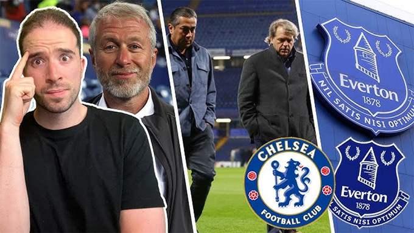

Theo nhà báo David Ornstein, Man City có thể sẽ không bị phạt nặng
BTC Premier League mới đây đã đưa ra tuyên bố chính thức về việc CLB Everton bị trừ 10 điểm vì vi phạm các quy định về công bằng tài chính. Theo điều tra của một ủy ban độc lập, Everton ghi nhận khoản lỗ lên tới 372 triệu bảng trong 3 năm qua, vượt 250 triệu bảng so với hạn mức lỗ mà giải đấu cho phép. Với án phạt này, Everton chỉ còn 4 điểm. Lệnh trừng phạt có hiệu lực ngay lập tức, nhưng Everton được quyền kháng cáo. Đội chủ sân Goodison Park đã mô tả đây là “một hình phạt hoàn toàn không công bằng và bất công”, và đang chuẩn bị thủ tục để kháng cáo. The Toffees cũng tuyên bố rằng họ ''sẽ hết sức quan tâm đến các quyết định được đưa ra trong bất kỳ trường hợp nào khác liên quan đến Quy tắc bền vững và lợi nhuận của Premier League''. Điều này như nhắm thẳng vào các trường hợp của Chelsea và Man City, hai CLB cũng đang bị Premier League điều tra. Man City đã bị buộc tội với 115 cáo buộc vi phạm các quy tắc của Premier League, phần lớn liên quan đến tài chính của CLB. Trong khi Chelsea, theo tiết lộ của tờ The Times, cũng bị điều tra vì các khoản thanh toán bí mật liên quan đến chuyển nhượng được thực hiện dưới thời tỷ phú Roman Abramovich.

Chelsea đang bị điều tra về các hành vi vi phạm của mình
Một luật sư đã tuyên bố hôm thứ Sáu rằng cả hai Man City và Chelsea thậm chí có thể bị xuống hạng nếu bị kết tội trong bất kỳ hành vi nào. Nhưng phát biểu trên podcast FIVE, nhà báo Ornstein đã làm rõ những gì có thể xảy ra với Man City và Chelsea trong tương quan với Everton. Ông giải thích: ''Điều đầu tiên cần chỉ ra là những trường hợp này không giống nhau. Cáo buộc nhắm vào Man City và Chelsea đều khác Everton. Bạn có thể hiểu đơn giản, Everton bị coi là đã vi phạm giới hạn cho phép về tổn thất tài chính. Họ cũng đang làm việc với Premier League và gần như thừa nhận đã có vi phạm. Trong trường hợp của Man City, chúng tôi không được giải thích điều gì đang xảy ra. Nhiều khoản phí trong số đó được lặp lại, hết mùa này đến mùa khác, vì vậy chúng không nhất thiết phải là 115 khoản phí. Có thể đó là một con số nhỏ hơn. Man City đã phản đối và phủ nhận những cáo buộc đó, nên không có gì đảm bảo rằng hai trường hợp sẽ được xử lý giống nhau
Theo nhà báo David Ornstein, Man City có thể sẽ không bị phạt nặng
Thật thú vị khi Everton có động thái theo dõi các trường hợp của Man City, Chelsea và tôi nghĩ đó sẽ là một câu chuyện lớn. Sẽ có áp lực ngày càng tăng đối với Premier League và các cơ quan chức năng trong việc giải quyết những trường hợp này vì sự trong sạch của giải đấu trong tương lai, vì sự công bằng cho một sân chơi bình đẳng''. Nhà báo Ornstein cũng gợi ý rằng năm 2024 có thể là một ''năm quyết định'' trong vụ kiện của Man City, mặc dù nói thêm rằng chưa có dấu hiệu nào cho thấy thời điểm vụ việc sẽ chính thức được xét xử.
Web được làm bởi: Trần Nguyễn Chí Kiên